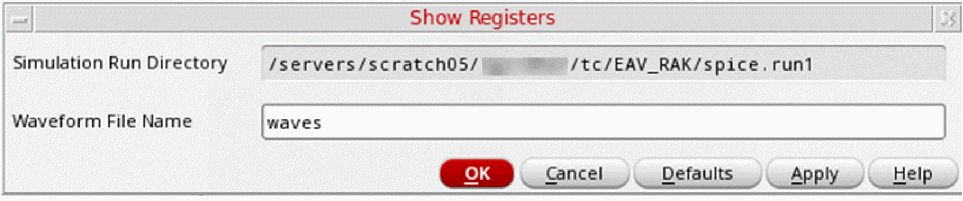

Viewing Waveform Results in Register Format
To view the waveforms produced during a simulation in register format:
-
In the schematic window, select Simulation – Show Registers.
The Show Registers form appears.
The Simulation - Show Registers command is enabled only after you have used the Initialize command to initialize the simulation environment. - In the Waveform File Name field, specify the name of the waveform file to be displayed.
- Click OK.
The system opens the register display window.
Related Topics
Viewing Waveform Results in the Schematic
Initializing the Simulation Environment
Return to top